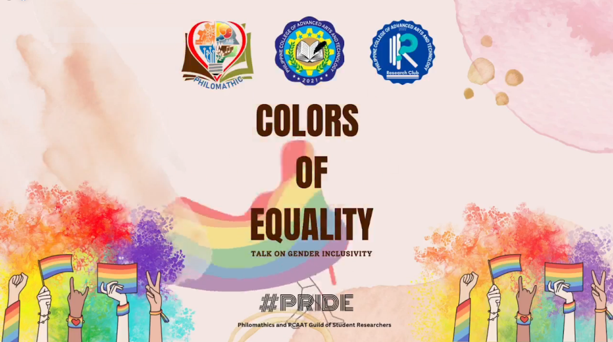
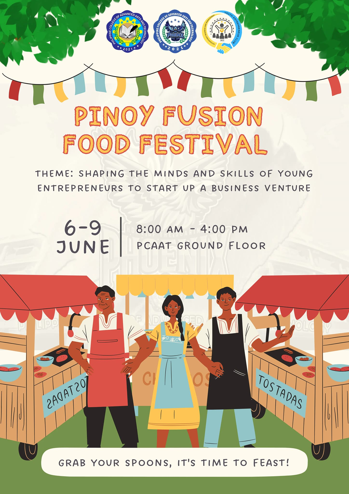
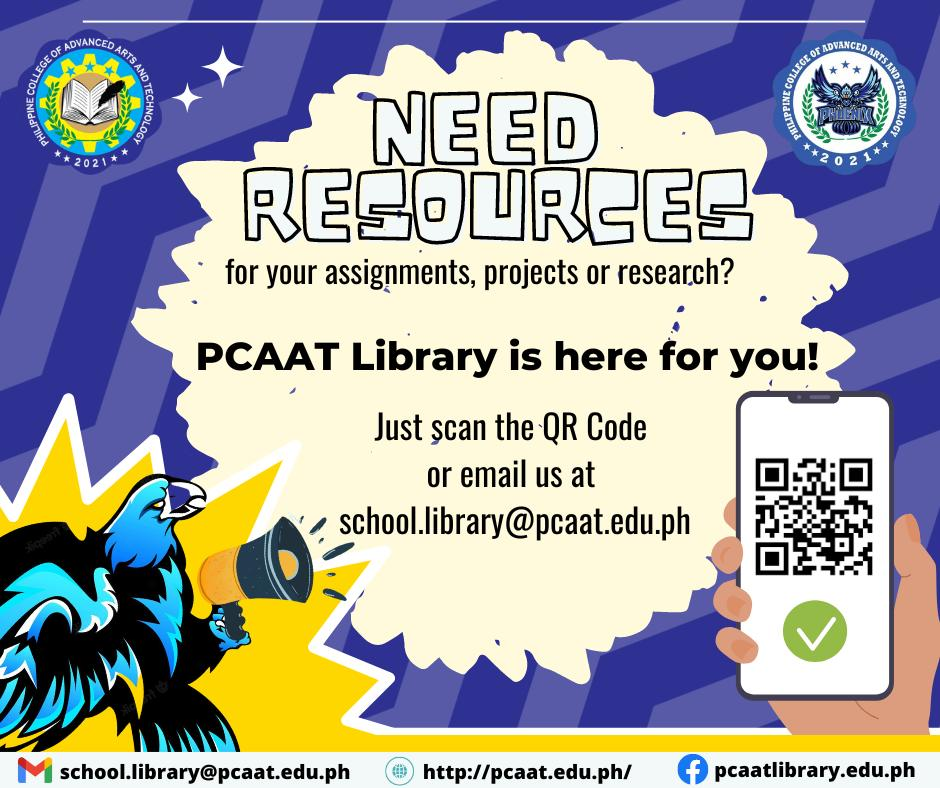
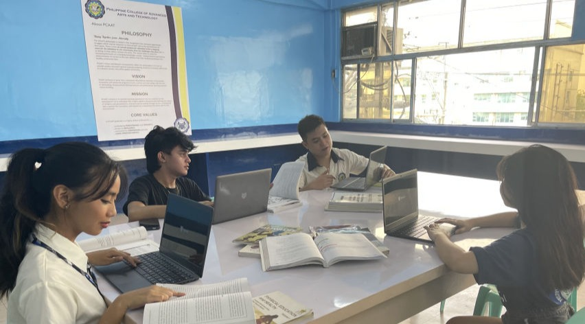
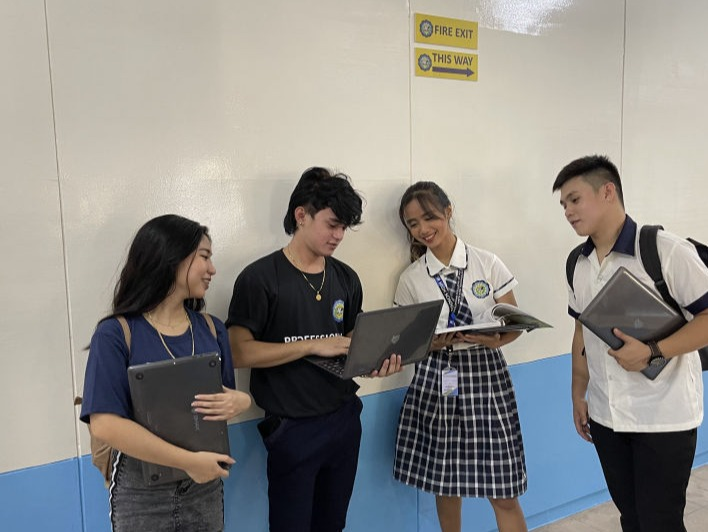

What is PCAAT?
Philippine College of Advanced Arts and Technology (PCAAT) is a new school established during the pandemic. It aims to meet the educational needs of young people despite the difficulties in the challenging education system. PCAAT offers different Senior High School Strands namely Humanities and Social Sciences Strand, Accountancy, Business, and Management Strand, General Academic Strand, Technical-Vocational-Livelihood ICT and Bartending.

Colors of Equality
At the Philippine College of Advanced Arts and Technology, we pride ourselves on fostering a safe, inclusive, and affirming environment for all students, including those from the LGBTQ+ community. We celebrate diversity and embrace individuals of all sexual orientations and gender identities. Our campus is a space where everyone can express themselves freely, without fear of discrimination or prejudice. We provide support networks, LGBTQ+-focused initiatives, and resources to ensure that every student feels respected and valued. Join us at PCAAT, where you can fully embrace your authentic self while pursuing your artistic passions.
Youth Entrepreneur Club (ABM)
PCAAT recently organized a highly informative webinar on financial literacy, reflecting our commitment to empowering students with essential life skills. Recognizing the importance of financial knowledge in today's complex world, we hosted industry experts who shared valuable insights and practical tips on budgeting, investments, and financial planning. By raising awareness about financial literacy, PCAAT aims to equip our students with the tools necessary to make informed financial decisions, build a secure future, and achieve their artistic aspirations with financial confidence. Join us in our mission to promote financial literacy and unlock a world of possibilities at PCAAT.

Pinoy Fusion Food Festival
PCAAT recently orchestrated a remarkable food festival, providing a platform for our ABM (Accounting, Business, and Management) students to gain invaluable hands-on experience in event management and entrepreneurship. This vibrant and delectable extravaganza showcased the culinary talents of our students and offered a diverse array of mouthwatering cuisines to tantalize taste buds. From food preparation to customer service, our ABM students took charge of every aspect of the festival, honing their skills in teamwork, leadership, and business acumen. This immersive experience not only allowed them to apply classroom knowledge in a real-world setting but also fostered a spirit of innovation and entrepreneurial thinking. PCAAT continues to create such immersive opportunities, preparing our students for successful careers in the dynamic and ever-evolving culinary industry.

Pcaat Library
PCAAT takes great pride in offering a well-equipped and welcoming library for its students. Our library serves as a haven of knowledge and exploration, providing a vast collection of books, journals, and digital resources to support students in their academic pursuits. From textbooks to research materials, the library offers a diverse range of materials across various disciplines, catering to the diverse interests of our students. Additionally, our friendly and knowledgeable librarians are always ready to assist students in finding relevant resources and conducting effective research. Whether it's a quiet space for studying, accessing online databases, or borrowing materials, the PCAAT library is a valuable resource center that promotes learning, discovery, and intellectual growth.
VISION
PCAAT envisions to grow into a renowned educational institution that provides innovative and advanced program in arts, science and technology with the aim of developing compassionate lifelong learners and professionals working towards nation building.

MISSION
PCAAT’s mission is to provide learning experiences that are centered on development of an individual into a highly skilled professional exemplifying the values of integrity and perseverance characterized by leading through service, emboldened with a passion for innovation and inspired by compassion for others and for the environment.

PHILOSOPHY
The school’s philosophy is rooted in the recognition that everyone experiences struggles which maybe obstacles to their growth and to the achievement of their goals. There is then an overall purpose for education to be a stepping stone for the individual to rise victoriously, from the challenges they face and in so doing, to others achieve the same. The school seeks to meet the increasing demands of a changing knowledge society, seeing beyond quantitative measurement of success to the core abilities that help students or graduates live healthy productive lives.
CORE VALUES
A PCAAT graduate is highly skilled professional that embodies PERSEVERANCE and INTEGRITY, drives to EXCELLENCE, motivates by COMPASSION and leads through SERVICE.